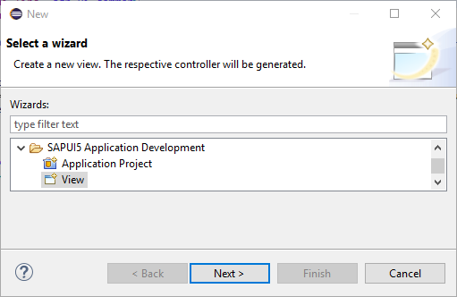
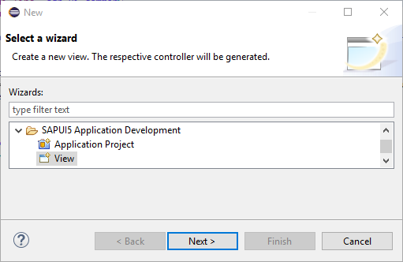

Create an Additional View
An SAPUI5 application view can only be created for an SAPUI5 application project that has been created with the SAPUI5 Application Wizard and not for other kinds of projects.
Context
- A SAPUI5 application view name needs to be unique inside the project folder.
- The specified folder for a SAPUI5 application view needs to be WebContent/<application name> or a sub folder.
Procedure
-
Choose
 New
New  Other... SAPUI5 Application Development View
Other... SAPUI5 Application Development View to open the New SAPUI5 Application View wizard.

to open the New SAPUI5 Application View wizard.

Results
When you finish the wizard, the system creates the view in the specified folder. The file name suffix indicates the development paradigm:
- <viewname>.view.js for JavaScript views
- <viewname>.view.xml for XML views
- <viewname>.view.json for JSON views
- <viewname>.view.html for HTML views
If the corresponding index.html file contains sap.m lib in the bootstrap, that is, if the SAPUI5 application project has been created for a mobile target device, the view contains coding for instantiating a mobile page control sap.m.Page.
The system also creates a controller file <viewname>.controller.js with draft coding.
For JavaScript views, code completion is available, see JavaScript Code Completion.